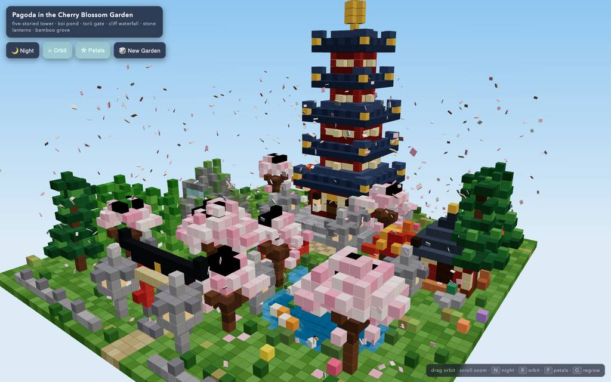
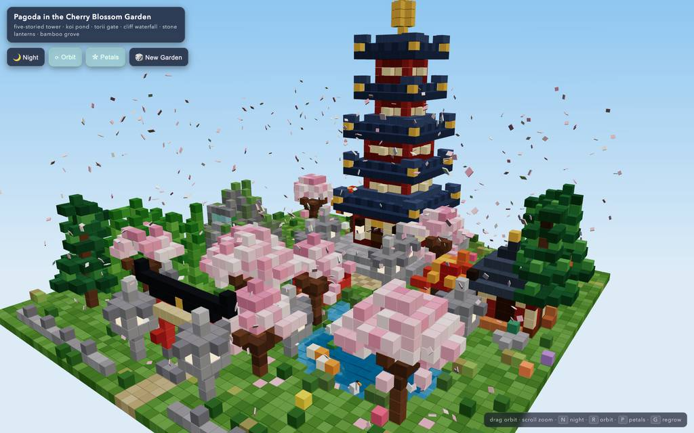
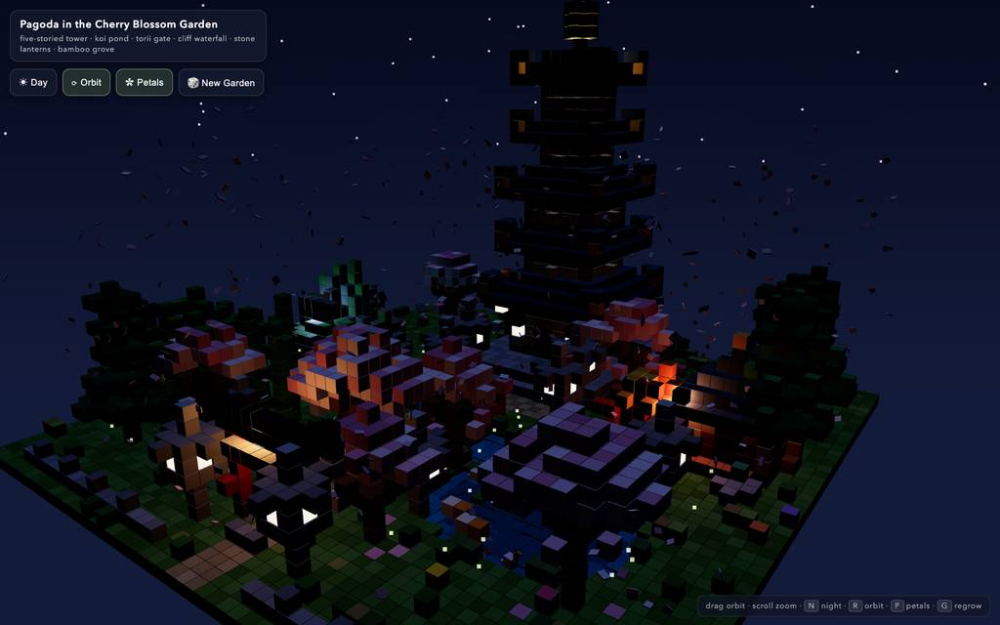
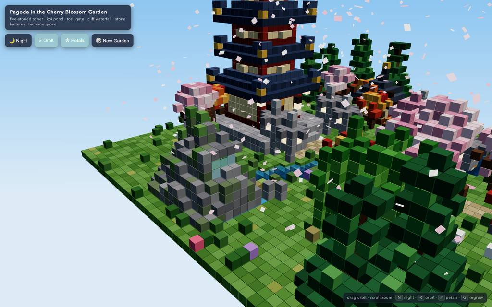
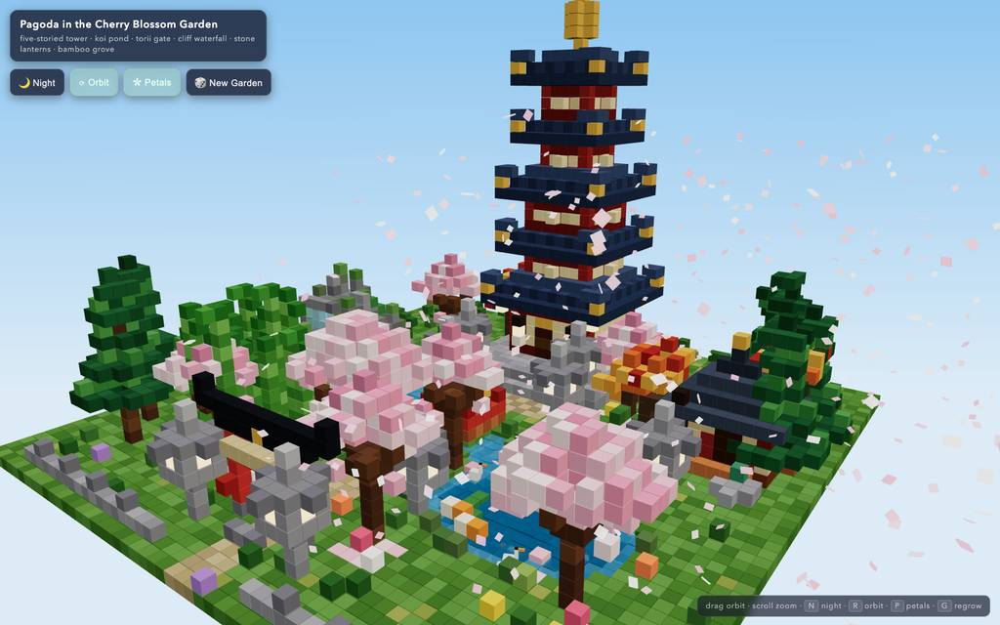

runs / 2026-10-26 / 203742-022000-strata-huihui-qwen3.8-fn-q4_xs-9a527393
初稿を破棄し書き直した voxel 庭園、ブラウザ検証を経て 19 分で完了
huihui-qwen3.8-flash-next-abliterated-v2-ud-iq4_xs（Strata 0.1.48、llama.cpp API）がプロンプトを受け、voxel 庭園の単一 HTML（voxel-pagoda-garden.html、32,455 バイト）を 69 呼び出し・1136.5 秒で生成し、exit 0 の completed で終えた。初稿は構文崩れで全体書き直しに倒れ、その後は残骸行除去、headless はみ出し点検、Chromium 起動検証と見た目の微調整が交互に続く経過だった。出力トークンは計 71,223、ピーコンテキストは 97,642（ウィンドウ 524,288）で余力は大きかった。
成果物
work/voxel-pagoda-garden.html（32,455 バイト）をそのまま同梱している。重いシーンもあるため、必要なときだけ起動する。
voxel-pagoda-garden.html
32 KB · 起動するまで読み込まない











全 14 枚から等間隔に 12 枚を選んでいる。logs/events.jsonl の画像ブロックを内容ハッシュで重複排除して時系列に並べた、制作中の検証用スクリーンショット。最終版とは限らない。
成果物の構成
| 要素 | 内容 |
|---|---|
| ファイル形態 | voxel-pagoda-garden.html は単一ファイル約 32KB の自己完結型で、Three.js r160 のみ CDN から import map 経由で読み込む（最終報告より） |
| 規模とレンダリング | 約 8,700 の seeded voxels を 1 つの InstancedMesh とインスタンス別カラーで描画し、高速性を保つ設計 |
| 五重塔 | 2 層の石基壇、朱の柱と笠木、板戸＋金額、全段全面の菱形窓、二色瓦＋金箔の反り屋根、軒提灯、光る行灯、6 ブロックの相輪 |
| 桜 | 桜 8 本（大木 2 本）、再帰分岐の幹と複数ブロブの樹冠、散り落ち芝生上の花びら |
| 鯉池 | 陰影付き水深、沈水植物、苔の岸、蓮 7、白鷺 2、鴨 2、楕円軌で揺れる Animated koi 4（紅/白/金） |
| 流れと橋 | 苔の岩山から落ちる 3 筋の waterfall、飛沫と落ち池へ至る流れ、手すり＋笠木付き朱のアーチ橋 |
| 鳥居と茶屋 | 笠木・島木・貫・しめ縄・額付きの鳥居、光る窓 voxel を持つ石灯籠 6 基、土壁＋寄棟屋根＋縁側＋赤提灯の茶屋 |
| 周囲の植栽 | 松林、カエデ 3 本、竹 16 本の竹林、小石塔、岩・草叢・野花、境界の石垣と竹柵 |
| 動きと雰囲気 | 揺らめく透明水面、花弁パーティクル 480、4K PCF の太陽影、fog、グラデーション空；夜間は月・星・蛍・明滅する灯りへ切替 |
| 操作と再生成 | ドラッグ軌道・ホイールズーム・ボタン/N/R/P キー、🎲 New Garden（G）は新シードで岩山と散布を再生成し instanced シーン全体を再構築することを確認済み |
モデルの最終メッセージから読み取った内容。コードの確認はしていない。
タイムライン
69 回の API 呼び出しを時間順に並べた。上段の帯の幅が各呼び出しの所要時間で、帯の間の空白がツールの実行時間。下段はその時点のコンテキスト長。細い帯は、エージェントが別に投げた補助リクエスト（画像判定など）。 upstream が usage を返さない場合は、events.jsonl の message_end から復元する。復元できない値は ? で示す。
最も長い 2 回の生成（#2 240 秒・#3 192 秒）で 432.8 秒、壁時計の 38.1%。出力トークンの上位 4 回（#2・#3・#6・#40）で全体の 67.9%（48,346 / 71,223）。推論以外（ツール実行など）は約 33 秒（3%）。
フェーズ別の内訳
| フェーズ | 経過 | 所要 | 全体に占める割合 | 呼び出し | 出力 tok | 何をしたか |
|---|---|---|---|---|---|---|
| 生成と構文修正 | 0:00–10:26 | 626 秒 | 55.2% | 6 | 47,952 | #1 の補助呼び出し（8.3s）後、作業ディレクトリ確認（#2）から初回 HTML を一気に書き出し（#2=16,445 トークン、#3=15,324 トークン）。抽出モジュールの node 構文チェックが SyntaxError で失敗し（E1、#4〜#5）、#6 でファイル全体を書き直した。 |
| 残骸行の除去 | 10:26–11:17 | 50 秒 | 4.4% | 10 | 2,550 | 書き直し後の safeguard・lotus などの残骸行と波括弧破損を edit/read/bash で断続的に除去（#7〜#15）。CUT コマンドの誤用で 1 度リトライ（E2）しつつ、#16 でモジュール構文を再チェックした。 |
| はみ出し修正 | 11:17–12:03 | 47 秒 | 4.1% | 9 | 2,605 | node で scene 生成を headless 実行（#17）し、three パッケージ欠如を import 除去で回避（E3、#18）。特定されたはみ出しボクセルに対し edge pine を内側へ寄せる edit を試み、基準行エラー（E4/E5）を含むリトライ後に #25 でブラウザツールのドキュメントへ移った。 |
| ブラウザ起動 | 12:03–14:06 | 122 秒 | 10.8% | 17 | 6,524 | eval でページを開き日中スクリーンショットを狙うが、loader が消えず診断が続く（#29〜#32、#37〜#38）。rnd のシード問題を edit で修正し（#34〜#36）、#41 で debug ハンドルを追加。eval の戻り値・引数の誤用 3 件（E6〜E8）はこの区間。 |
| 見た目調整 | 14:06–14:55 | 49 秒 | 4.3% | 9 | 2,479 | 桜のキャノピーの拡大表示から、emissive なガラス・花弁の増亮、落下花瓣の拡大といった外観編集を実施。edit の基準行不一致（E9/E10）に対する行番号再確認を挟み、#51 の日中・夜景ワイドスクリーンショットで状態を記録した。 |
| 暗部デバッグ | 14:55–16:23 | 89 秒 | 7.8% | 10 | 4,128 | 暗いボクセルの位置調査とスタックトレース計測（#52〜#55）で zero-color 呼び出しを突き止め、sakuraDark 配列の不具合を修正（#56〜#58）。夜間アンビエントと昼ランテナの光を強めた上で日・夜のスクリーンショットで確認した（#59〜#61）。 |
| 最終調整と検証 | 16:23–18:55 | 152 秒 | 13.4% | 8 | 4,985 | 花弁を unlit 化し夜間ヘミスフィアライトを明るくした（#64）後、池・夜・regrow の browser 確認（#65〜#66）。最終の構文・コンテンツチェック（#67）とデフォルト状態スクリーンショット（#68）を経て #69 の最終メッセージで完了。 |
フェーズの切れ目は、ログから読み取れる作業内容の変わり目（LLM による区切り）。所要時間は、そのフェーズの最初の呼び出しの開始から次のフェーズの最初の呼び出しの開始まで。
69 回の呼び出しを表で見る
| # | 種別 | フェーズ | 開始 | 所要 秒 | prompt | うち cache | 出力 | tok/s | HTTP | ツール |
|---|---|---|---|---|---|---|---|---|---|---|
| 1 | 補助 | 生成と構文修正 | 0:00 | 8.3 | 180 | 0 | 548 | 75.1 | 200 | — |
| 2 | 主ループ | 生成と構文修正 | 0:00 | 240.4 | 8,011 | 0 | 16,445 | 71.8 | 200 | bash |
| 3 | 主ループ | 生成と構文修正 | 4:01 | 192.4 | 24,598 | 24,457 | 15,324 | 79.9 | 200 | write |
| 4 | 主ループ | 生成と構文修正 | 7:13 | 16.4 | 39,970 | 39,923 | 1,139 | 72.3 | 200 | bash |
| 5 | 主ループ | 生成と構文修正 | 7:30 | 3.3 | 41,199 | 41,109 | 185 | 65.6 | 200 | bash |
| 6 | 主ループ | 生成と構文修正 | 7:33 | 173.2 | 41,493 | 41,384 | 14,311 | 82.9 | 200 | write |
| 7 | 主ループ | 残骸行の除去 | 10:26 | 14.6 | 55,851 | 41,488 | 647 | 65.0 | 200 | edit |
| 8 | 主ループ | 残骸行の除去 | 10:41 | 3.9 | 56,644 | 56,499 | 213 | 65.2 | 200 | read + read |
| 9 | 主ループ | 残骸行の除去 | 10:45 | 3.7 | 57,679 | 56,857 | 174 | 66.1 | 200 | edit |
| 10 | 主ループ | 残骸行の除去 | 10:49 | 2.3 | 57,984 | 57,853 | 108 | 64.6 | 200 | bash |
| 11 | 主ループ | 残骸行の除去 | 10:51 | 3.0 | 58,188 | 58,093 | 172 | 68.1 | 200 | edit |
| 12 | 主ループ | 残骸行の除去 | 10:54 | 4.6 | 58,416 | 58,361 | 250 | 62.9 | 200 | bash |
| 13 | 主ループ | 残骸行の除去 | 10:59 | 5.2 | 59,086 | 58,665 | 295 | 67.4 | 200 | edit |
| 14 | 主ループ | 残骸行の除去 | 11:04 | 4.5 | 59,741 | 59,381 | 241 | 66.0 | 200 | read |
| 15 | 主ループ | 残骸行の除去 | 11:08 | 4.9 | 60,348 | 59,983 | 268 | 65.9 | 200 | edit |
| 16 | 主ループ | 残骸行の除去 | 11:13 | 3.2 | 60,748 | 60,617 | 182 | 68.7 | 200 | bash |
| 17 | 主ループ | はみ出し修正 | 11:17 | 6.6 | 60,948 | 60,931 | 431 | 68.3 | 200 | bash |
| 18 | 主ループ | はみ出し修正 | 11:23 | 2.8 | 61,713 | 61,379 | 146 | 70.1 | 200 | bash |
| 19 | 主ループ | はみ出し修正 | 11:26 | 8.3 | 61,907 | 61,859 | 478 | 63.0 | 200 | bash |
| 20 | 主ループ | はみ出し修正 | 11:35 | 12.1 | 62,465 | 62,384 | 754 | 64.8 | 200 | edit |
| 21 | 主ループ | はみ出し修正 | 11:47 | 4.7 | 63,346 | 63,218 | 256 | 61.2 | 200 | bash |
| 22 | 主ループ | はみ出し修正 | 11:52 | 3.3 | 63,771 | 63,602 | 175 | 65.8 | 200 | edit |
| 23 | 主ループ | はみ出し修正 | 11:55 | 2.1 | 64,121 | 63,947 | 83 | 56.9 | 200 | read |
| 24 | 主ループ | はみ出し修正 | 11:57 | 4.0 | 64,511 | 64,204 | 200 | 61.8 | 200 | edit |
| 25 | 主ループ | はみ出し修正 | 12:01 | 2.0 | 64,880 | 64,712 | 82 | 60.5 | 200 | read |
| 26 | 主ループ | ブラウザ起動 | 12:03 | 6.1 | 68,166 | 64,962 | 313 | 68.0 | 200 | eval |
| 27 | 主ループ | ブラウザ起動 | 12:11 | 2.4 | 68,604 | 68,480 | 147 | 80.1 | 200 | eval |
| 28 | 主ループ | ブラウザ起動 | 12:13 | 3.0 | 68,969 | 68,751 | 168 | 70.4 | 200 | eval |
| 29 | 主ループ | ブラウザ起動 | 12:16 | 6.6 | 69,889 | 69,137 | 361 | 66.4 | 200 | eval |
| 30 | 主ループ | ブラウザ起動 | 12:23 | 3.4 | 70,478 | 70,250 | 201 | 72.3 | 200 | eval |
| 31 | 主ループ | ブラウザ起動 | 12:28 | 9.4 | 71,483 | 70,679 | 561 | 68.4 | 200 | eval |
| 32 | 主ループ | ブラウザ起動 | 12:37 | 4.3 | 72,062 | 72,043 | 272 | 67.5 | 200 | eval |
| 33 | 主ループ | ブラウザ起動 | 12:42 | 4.9 | 72,388 | 72,333 | 274 | 64.7 | 200 | eval |
| 34 | 主ループ | ブラウザ起動 | 12:47 | 7.9 | 73,053 | 72,663 | 435 | 60.9 | 200 | edit |
| 35 | 主ループ | ブラウザ起動 | 12:54 | 4.4 | 73,582 | 73,489 | 252 | 64.7 | 200 | read |
| 36 | 主ループ | ブラウザ起動 | 12:59 | 4.4 | 74,311 | 73,834 | 242 | 68.0 | 200 | edit |
| 37 | 主ループ | ブラウザ起動 | 13:03 | 3.7 | 74,782 | 74,552 | 214 | 71.3 | 200 | eval |
| 38 | 主ループ | ブラウザ起動 | 13:08 | 4.3 | 75,376 | 74,996 | 250 | 71.1 | 200 | eval |
| 39 | 主ループ | ブラウザ起動 | 13:14 | 3.3 | 75,701 | 75,625 | 174 | 61.4 | 200 | eval |
| 40 | 主ループ | ブラウザ起動 | 13:18 | 37.9 | 76,680 | 75,875 | 2,266 | 61.7 | 200 | read |
| 41 | 主ループ | ブラウザ起動 | 13:56 | 2.7 | 79,180 | 78,946 | 126 | 62.7 | 200 | edit |
| 42 | 主ループ | ブラウザ起動 | 13:59 | 4.7 | 79,443 | 79,307 | 268 | 65.1 | 200 | eval |
| 43 | 主ループ | 見た目調整 | 14:06 | 25.8 | 80,515 | 79,711 | 1,502 | 61.1 | 200 | edit |
| 44 | 主ループ | 見た目調整 | 14:31 | 2.1 | 82,232 | 82,016 | 80 | 62.8 | 200 | bash |
| 45 | 主ループ | 見た目調整 | 14:34 | 2.9 | 82,406 | 82,311 | 163 | 68.6 | 200 | edit |
| 46 | 主ループ | 見た目調整 | 14:36 | 2.0 | 82,779 | 82,568 | 69 | 57.9 | 200 | read |
| 47 | 主ループ | 見た目調整 | 14:38 | 1.9 | 82,945 | 82,847 | 90 | 63.8 | 200 | read |
| 48 | 主ループ | 見た目調整 | 14:40 | 2.6 | 83,283 | 83,035 | 127 | 70.0 | 200 | edit |
| 49 | 主ループ | 見た目調整 | 14:43 | 2.4 | 83,573 | 83,411 | 109 | 62.8 | 200 | read |
| 50 | 主ループ | 見た目調整 | 14:45 | 2.2 | 83,922 | 83,682 | 104 | 69.8 | 200 | edit |
| 51 | 主ループ | 見た目調整 | 14:48 | 4.0 | 84,154 | 84,026 | 235 | 69.3 | 200 | eval |
| 52 | 主ループ | 暗部デバッグ | 14:55 | 34.2 | 85,262 | 41,488 | 1,303 | 64.9 | 200 | bash |
| 53 | 主ループ | 暗部デバッグ | 15:29 | 7.0 | 86,935 | 86,565 | 386 | 61.7 | 200 | bash |
| 54 | 主ループ | 暗部デバッグ | 15:36 | 11.4 | 87,376 | 87,320 | 686 | 64.7 | 200 | bash |
| 55 | 主ループ | 暗部デバッグ | 15:48 | 4.6 | 88,107 | 88,062 | 286 | 71.2 | 200 | bash |
| 56 | 主ループ | 暗部デバッグ | 15:53 | 8.0 | 88,942 | 88,393 | 458 | 63.9 | 200 | edit |
| 57 | 主ループ | 暗部デバッグ | 16:01 | 1.8 | 89,548 | 89,399 | 73 | 66.7 | 200 | read |
| 58 | 主ループ | 暗部デバッグ | 16:02 | 3.7 | 89,889 | 89,621 | 191 | 66.1 | 200 | edit |
| 59 | 主ループ | 暗部デバッグ | 16:06 | 5.5 | 90,345 | 90,079 | 266 | 56.3 | 200 | read |
| 60 | 主ループ | 暗部デバッグ | 16:12 | 4.3 | 91,053 | 90,611 | 235 | 68.6 | 200 | edit |
| 61 | 主ループ | 暗部デバッグ | 16:16 | 4.5 | 91,584 | 91,288 | 244 | 66.9 | 200 | eval |
| 62 | 主ループ | 最終調整と検証 | 16:23 | 39.9 | 92,047 | 7,816 | 873 | 61.5 | 200 | bash |
| 63 | 主ループ | 最終調整と検証 | 17:03 | 1.7 | 93,034 | 92,920 | 73 | 70.2 | 200 | read |
| 64 | 主ループ | 最終調整と検証 | 17:05 | 3.0 | 93,355 | 93,107 | 158 | 69.8 | 200 | edit |
| 65 | 主ループ | 最終調整と検証 | 17:08 | 4.8 | 93,776 | 93,513 | 270 | 67.5 | 200 | eval |
| 66 | 主ループ | 最終調整と検証 | 17:16 | 40.7 | 94,279 | 7,816 | 963 | 65.6 | 200 | eval |
| 67 | 主ループ | 最終調整と検証 | 18:00 | 32.1 | 95,536 | 73,352 | 1,565 | 63.9 | 200 | bash |
| 68 | 主ループ | 最終調整と検証 | 18:32 | 5.2 | 97,219 | 97,101 | 295 | 64.5 | 200 | eval |
| 69 | 主ループ | 最終調整と検証 | 18:41 | 14.5 | 97,642 | 89,736 | 788 | 68.2 | 200 |
試行錯誤
ツールがエラー（isError）を返した結果の一覧。ツールは成功したのにモデル自身が内容を壊したケースは、ここには出ない。
エラーとして記録された 11 件
| 経過 | ツール | 起きたこと | 分類 |
|---|---|---|---|
| 7:33 | bash | 初稿から抽出した JS の node 構文チェックが SyntaxError で失敗し、#6 の全体書き直しの引き金になった。<path> for(const sx of[-1,1]) for(const sz of[-1,1]){ V(cx+6*? 0:0,0,0,0); } ^ SyntaxError: Unexpected token '?' at checkSyntax (node:internal/main/check_syntax:84:5) Node.js v24.22.1 Command exited w | 構文エラー |
| 10:54 | edit | 本体行を取らない CUT コマンドに新規コンテンツを渡そうとして拒否され、PUT 記法へのリトライを要した。line 3: `CUT` deletes (and captures) the named lines and takes no body rows. To write new content, use `PUT N.=M:` with `+TEXT` rows. | edit 誤用 |
| 11:23 | bash | headless 実行で three パッケージが見つからず、import を除去して再実行した。node:internal/modules/package_json_reader:331 throw new ERR_MODULE_NOT_FOUND(packageName, fileURLToPath(base), null); ^ Error [ERR_MODULE_NOT_FOUND]: Cannot find package 'three' imported from <path> a | モジュール解決失敗 |
| 11:47 | edit | edit が以前に表示していない行番号を基準にしようとして失敗し、read での刷新後にリトライされた。This edit anchors to lines 422 of voxel-pagoda-garden.html that [voxel-pagoda-garden.html#63FD] never displayed (it showed a partial range, a search hit, or a folded summary). Actual file content at t | 基準行の未表示 |
| 11:55 | edit | 同じ edit 基準行エラーが pine 修正中に再発し、#23 の read 後に retry となった。This edit anchors to lines 433 of voxel-pagoda-garden.html that [voxel-pagoda-garden.html#63FD] never displayed (it showed a partial range, a search hit, or a folded summary). Actual file content at t | 基準行の未表示 |
| 12:13 | eval | browser eval の JS 内でエラーリストを slice しようとしたが配列でなく失敗した。TypeError: errs.slice is not a function. (In 'errs.slice(0,8)', 'errs.slice' is undefined) at <anonymous> (js-cell-33a6cd8a-681a-4e46-bb10-d30ce73b725e.js:9:51) at async Xce (/$bunfs/root/chunks/cli-d | 戻り値の型誤用 |
| 12:23 | eval | コンソールリストに対しても同じ slice の型違いで eval が失敗した。TypeError: (con||[]).slice is not a function. (In '(con||[]).slice(-6)', '(con||[]).slice' is undefined) at <anonymous> (js-cell-5d991d99-22c9-4b2e-816a-936ff8c09cb3.js:9:32) at async Xce (/$bunfs/roo | 戻り値の型誤用 |
| 13:07 | eval | 文字列セレクタを要求する browser API に関数を渡して拒否され、メソッド直接呼びに切り替えた。ToolError: Browser selector must be a string; got a function. tab.click/type/fill/waitFor take string selectors only — call the handle method directly (e.g. (await tab.id(n)).click()) or pass a string | セレクタ誤用 |
| 14:31 | edit | emissive 編集で 2 件の基準行が未表示と判定され、bash で行番号を特定し直して再編集した。This edit anchors to lines 544, 597 of voxel-pagoda-garden.html that [voxel-pagoda-garden.html#C86A] never displayed (it showed a partial range, a search hit, or a folded summary). Actual file content | 基準行の未表示 |
| 14:36 | edit | 別の edit でも基準行が未表示で失敗し、read によるタグ刷新ののち matEmis 行を再特定して適用した。This edit anchors to lines 517, 642 of voxel-pagoda-garden.html that [voxel-pagoda-garden.html#C86A] never displayed (it showed a partial range, a search hit, or a folded summary). Actual file content | 基準行の未表示 |
| 16:01 | edit | cherryDark 編集で基準行エラーが出て、read で該当領域を刷新してから修正を完了した。This edit anchors to lines 345 of voxel-pagoda-garden.html that [voxel-pagoda-garden.html#0D4D] never displayed (it showed a partial range, a search hit, or a folded summary). Actual file content at t | 基準行の未表示 |
経過は、そのツールを呼んだターンの終了時刻。エラー本文は先頭 300 文字までで、パスや接続先は伏せてある。
気づいた点
計測データ（呼び出し一覧・エラー・最終メッセージ）だけから LLM が書いた読み取り。文中の数値は、上の KPI や表と照らして確認する。
生成3発で過半のトークン
#2（240.4s・16,445 トークン）、#3（192.4s・15,324 トークン）、#6（173.2s・14,311 トークン）の 3 呼び出しだけで計 606s・46,080 トークンに達し、総時間 1136.5s と総出力 71,223 トークンのそれぞれ約半分・約 65% を占めた。本体生成は 70〜80 トークン/秒程度のデコードで淡々と長く流れた計算になる。
初稿は一度全書き直し
モジュール抽出版は構文チェック（#4〜#5、E1）で崩れが分かり、#6 で 14,311 トークンかけて全面書き直しになった。しかし書き直し稿にも残骸行と波括弧破れが残存し、除去と再チェックに #7〜#16 の 10 呼び出しを費やしている。
edit 基準行エラーが頻発
ツールエラー 11 件のうち 5 件が edit の「基準行が未表示」失敗（E4/E5/E9/E10/E11）で、#23・#46〜#49・#57 の read 刷新を伴うリトライが常態化していた。残る失敗も構文残骸（E1/E2）、import 不足（E3）、eval の型・引数違い（E6〜E8）にとどまり、設計の作り直しは一度だけで済んでいる。
cache欠落でprefill急増
#52・#62・#66 ではキャッシュが 41,488・7,816・7,816 トークンまで落ち、prefill が 13.8s・25.4s・25.8s に跳ね上がった。結果この 3 呼び出しは 34.2s・39.9s・40.7s となり、前後の短い eval 検証（数秒）と対照的に末尾区間の時間を圧迫した。
終盤291秒は検証と微調整
#43（t=846s）から終了までの約 291s ではスクリーンショット・見た目の edit・構文/コンテンツチェックのみが進行し、新規エラーは出ていない。この区間の 27 呼び出しの最大出力は 1,565 トークン（#67）で、実行は completed（exit 0、計 1136.483s、スクリーンショット 14 枚）で着地した。
入力と設定
Design and create a very creative, elaborate, and detailed voxel art scene of a pagoda in a beautiful garden with trees, including some cherry blossoms. Make the scene impressive and varied and use colorful voxels. Add as many details as possible to showcase your attention to them. Use whatever libraries to get this done but make sure I can paste it all into a single HTML file.
input/prompt.md の全文。SHA-256 は ceece4685b37…。
| omp の起動オプション | --print --mode json --thinking high --no-title --approval-mode yolo |
| upstream | （接続先は伏せている） |
| タイムアウト | 43,200 秒 |
config/00-omp.yml
setupVersion: 2 autolearn: enabled: false autoContinue: false